TD Analyse de données Single Cell RNA-seq sous R/Bioconductor - Package Seurat - Avancé
Ghislain Bidaut, Plateforme Cibi, CRCM, Aix-Marseille Université
Novembre 2025
1 TD Avancé: Etude multi échantillons par Harmony
Dans ce TD, nous allons maintenant intégrer l’ensemble des échantillons disponibles pour obtenir un objet Seurat permettant une analyse intégrée avec la librairie Harmony.
Nous aborderons les points suivants:
- Intégration de plusieurs échantillons
- Comparaison Normal/PDAC
- Clusterisation hiérarchique (cluster de cluster)
- Compensation du cycle cellulaire
- Annotation automatisée
- Enrichissement GO
1.1 Chargement des librairies
library(Seurat)## Loading required package: SeuratObject## Loading required package: sp## 'SeuratObject' was built under R 4.5.0 but the current version is
## 4.5.1; it is recomended that you reinstall 'SeuratObject' as the ABI
## for R may have changed## 'SeuratObject' was built with package 'Matrix' 1.7.3 but the current
## version is 1.7.4; it is recomended that you reinstall 'SeuratObject' as
## the ABI for 'Matrix' may have changed##
## Attaching package: 'SeuratObject'## The following objects are masked from 'package:base':
##
## intersect, tlibrary(harmony)## Loading required package: Rcpp1.2 Fixation de la “racine aléatoire”
set.seed(1234) # pour reproductibilité1.3 Chargement des données
On importe les données d’entrée.
Les échantillons 14 et 16 étant à des formats non standards, je les ai supprimés.
Pour finir, on fait une table récapitulative du nombre de cellules pour chaque échantillon.
# Répertoire racine contenant tous les échantillons
input_dir <- "GSE155698_RAW"
#input_dir <- "/shared/projects/tp_2529_ngs_amu_181496/data/GSE155698_RAW"
# Liste des sous-répertoires (échantillons)
sample_dirs <- list.dirs(input_dir, recursive = FALSE)
# Créer une liste d’objets Seurat
seurat_list <- lapply(sample_dirs, function(dir) {
sample_name <- basename(dir) # nom de l’échantillon = nom du dossier
print(paste("read sample ", sample_name))
cur_data <- Read10X(data.dir = file.path(dir, 'filtered_feature_bc_matrix'))
seu <- CreateSeuratObject(counts = cur_data, project = sample_name, min.cells = 3, min.features = 200)
seu$orig.ident <- sample_name
return(seu)
})## [1] "read sample AdjNorm_TISSUE_1"## [1] "read sample AdjNorm_TISSUE_2"## [1] "read sample AdjNorm_TISSUE_3"## [1] "read sample PDAC_TISSUE_1"## [1] "read sample PDAC_TISSUE_2"## [1] "read sample PDAC_TISSUE_3"# Fusionner tous les objets en un seul
seurat.norm.pdac.multi <- Reduce(function(x, y) merge(x, y), seurat_list)
# Ajout d'une colonne dans metadata correspondante au type d'échantillon (normal ou PDAC)
seurat.norm.pdac.multi$condition <- ifelse(
grepl("PDAC", seurat.norm.pdac.multi$orig.ident, ignore.case = TRUE),
"PDAC",
"Norm"
)
# Vérifier combien de cellules par échantillon
table(seurat.norm.pdac.multi$orig.ident)##
## AdjNorm_TISSUE_1 AdjNorm_TISSUE_2 AdjNorm_TISSUE_3 PDAC_TISSUE_1
## 4326 3174 1098 1410
## PDAC_TISSUE_2 PDAC_TISSUE_3
## 1782 2390table(seurat.norm.pdac.multi$condition)##
## Norm PDAC
## 8598 5582seurat.norm.pdac.multi## An object of class Seurat
## 22746 features across 14180 samples within 1 assay
## Active assay: RNA (22746 features, 0 variable features)
## 6 layers present: counts.AdjNorm_TISSUE_1.SeuratProject.SeuratProject.SeuratProject.SeuratProject, counts.AdjNorm_TISSUE_2.SeuratProject.SeuratProject.SeuratProject.SeuratProject, counts.AdjNorm_TISSUE_3.SeuratProject.SeuratProject.SeuratProject, counts.PDAC_TISSUE_1.SeuratProject.SeuratProject, counts.PDAC_TISSUE_2.SeuratProject, counts.PDAC_TISSUE_31.4 Appliquer le pipeline standard Seurat et Harmony
- Appliquer l’ensemble des étapes standards Seurat
seurat.norm.pdac.multi <- NormalizeData(seurat.norm.pdac.multi, normalization.method = "LogNormalize", scale.factor = 10000) ## Normalizing layer: counts.AdjNorm_TISSUE_1.SeuratProject.SeuratProject.SeuratProject.SeuratProject## Normalizing layer: counts.AdjNorm_TISSUE_2.SeuratProject.SeuratProject.SeuratProject.SeuratProject## Normalizing layer: counts.AdjNorm_TISSUE_3.SeuratProject.SeuratProject.SeuratProject## Normalizing layer: counts.PDAC_TISSUE_1.SeuratProject.SeuratProject## Normalizing layer: counts.PDAC_TISSUE_2.SeuratProject## Normalizing layer: counts.PDAC_TISSUE_3seurat.norm.pdac.multi <- FindVariableFeatures(seurat.norm.pdac.multi, selection.method = "vst", nfeatures = 2000)## Finding variable features for layer counts.AdjNorm_TISSUE_1.SeuratProject.SeuratProject.SeuratProject.SeuratProject## Finding variable features for layer counts.AdjNorm_TISSUE_2.SeuratProject.SeuratProject.SeuratProject.SeuratProject## Finding variable features for layer counts.AdjNorm_TISSUE_3.SeuratProject.SeuratProject.SeuratProject## Finding variable features for layer counts.PDAC_TISSUE_1.SeuratProject.SeuratProject## Finding variable features for layer counts.PDAC_TISSUE_2.SeuratProject## Finding variable features for layer counts.PDAC_TISSUE_3seurat.norm.pdac.multi <- ScaleData(seurat.norm.pdac.multi) ## Centering and scaling data matrixseurat.norm.pdac.multi <- RunPCA(seurat.norm.pdac.multi, features = VariableFeatures(object = seurat.norm.pdac.multi))## PC_ 1
## Positive: KRT19, SMIM22, TM4SF1, ELF3, KRT8, EPCAM, FXYD3, C19orf33, TACSTD2, CLDN4
## TSPAN8, IFI27, MAL2, SLPI, AGR2, TMC5, LGALS4, KRT18, TSPAN1, KRT7
## GPRC5A, CYSTM1, GOLM1, WFDC2, SFTA2, S100A14, CAMK2N1, SPATS2L, SERINC2, RAB25
## Negative: PTPRC, SRGN, LAPTM5, CORO1A, CD37, LCP1, CD53, CD52, HCST, CD48
## CXCR4, VIM, LSP1, TYROBP, ITGB2, ALOX5AP, SLA, FYB, PTPRCAP, CCL4
## EVI2B, FCER1G, CD69, PRSS1, CD3E, CD2, APBB1IP, SAMSN1, CCL5, CD3D
## PC_ 2
## Positive: FXYD3, AGR2, C19orf33, SMIM22, MAL2, TSPAN1, KRT19, S100P, RP11-462G2.1, EPCAM
## CTSE, GPRC5A, TMC5, TMPRSS4, TFF2, VSIG2, MUC1, CEACAM6, ELF3, CLDN4
## LGALS4, TMEM238, S100A14, AMN, TFF1, SLPI, KCNK1, BCAS1, KLK11, SFTA2
## Negative: SPARCL1, IGFBP7, CALD1, C11orf96, MYL9, TAGLN, PLAC9, COX7A1, ACTA2, CSRP2
## FRZB, MYH11, MCAM, ADAMTS1, TIMP3, PPP1R14A, IGFBP5, SOD3, IGFBP4, RCAN2
## GPX3, TBX2, NDUFA4L2, LMOD1, PLN, CCDC3, MYLK, BGN, MT1M, MGP
## PC_ 3
## Positive: HLA-DRA, TYROBP, CD68, CTSB, AIF1, FTL, FCER1G, PSAP, HLA-DRB1, GRN
## CTSS, CD74, CD14, CD163, MS4A7, HLA-DPA1, FCGR2A, TYMP, S100A11, CTSZ
## MSR1, C1QC, PLXDC2, C1QA, KCTD12, APOE, HLA-DQB1, CTSD, CYBB, SPI1
## Negative: CEL, AMY2B, KLK1, PRSS3, REG1A, CTRB2, SPINK1, PDIA2, PRSS1, CTRL
## ERP27, GATM, MT1G, AZGP1, DPEP1, IGFBP2, GNMT, RARRES2, TMEM97, RBP1
## SLC43A1, NUCB2, SLC39A5, GPT2, TMEM52, GAMT, FKBP11, MT1H, BACE1, CBS
## PC_ 4
## Positive: SERPINA5, FXYD2, AMBP, SFRP5, CFTR, RBP1, SCTR, AQP1, SLC4A4, KCNJ16
## HOMER2, GATM, CYS1, FGFR3, SLC3A1, C8orf47, PPP1R1B, PKHD1, VTN, CLU
## FLRT2, REG1A, ANXA9, PRSS1, DEFB1, CEL, C21orf62, CTRB2, PHGDH, C14orf105
## Negative: CRIP1, S100A6, S100A4, LBH, PTPRCAP, ISG20, CCL5, CD3E, CD2, CD7
## CD3D, CTSW, MYH11, CD69, CD3G, MFGE8, NKG7, GZMA, CAMK2N1, CD247
## ACTA2, HCST, NDUFA4L2, FRZB, PHLDA2, PRF1, CORO1A, CEACAM6, AC092580.4, TPM2
## PC_ 5
## Positive: SOD3, MYH11, NDUFA4L2, PLN, FRZB, RCAN2, TAGLN, CCDC3, LMOD1, ITGA7
## ID4, NTRK2, TBX2, EFHD1, MYL9, NUPR1, PDGFA, SPINK1, CDH6, CNN1
## ACTA2, GATM, GPRC5C, NOTCH3, RBPMS2, RGS5, CSRP2, KCNAB1, NEXN, RASD1
## Negative: VWF, MMRN2, F2RL3, HYAL2, SDPR, PTPRB, AC011526.1, CDH5, FLT1, GPR116
## LDB2, STC1, SPRY1, CD320, CYYR1, PIK3R3, BTNL9, PPAP2A, EGFL7, SHANK3
## S1PR1, TMEM88, NOTCH4, FAM167B, ROBO4, LIFR, KANK3, COL15A1, IFITM1, CALCRLDimPlot(seurat.norm.pdac.multi, reduction = "pca")
- Faire un RunHarmony sur les échantillons
- Visualiser la réduction Harmony avec
Dimplot - Visualiser la réduction Harmony avec
Dimploten séparant les échantillons (`orig.ident’) - Faire un
ElbowPlotsur la réduction Harmony
- Visualiser l’UMAP finale avec l’ensemble des clusters.
- Faire une UMAP sur la réduction Harmony
- Visualiser l’UMAP Harmony avec
Dimplot - Visualiser l’UMAP Harmony avec
Dimploten séparant les conditions (PDAC- Normal) - Visualiser l’UMAP Harmony avec
Dimploten séparant les échantillons - Visualiser l’UMAP Harmony en groupant par sample et en séparant ^par condition
seurat.norm.pdac.multi <- FindNeighbors(seurat.norm.pdac.multi, reduction = "harmony", dims = 1:30)## Computing nearest neighbor graph## Computing SNNseurat.norm.pdac.multi <- FindClusters(seurat.norm.pdac.multi, resolution = 0.1)## Modularity Optimizer version 1.3.0 by Ludo Waltman and Nees Jan van Eck
##
## Number of nodes: 14180
## Number of edges: 565353
##
## Running Louvain algorithm...
## Maximum modularity in 10 random starts: 0.9820
## Number of communities: 15
## Elapsed time: 1 secondsseurat.norm.pdac.multi <- RunUMAP(seurat.norm.pdac.multi, reduction = "harmony", dims = 1:30)## 14:08:28 UMAP embedding parameters a = 0.9922 b = 1.112## 14:08:28 Read 14180 rows and found 30 numeric columns## 14:08:28 Using Annoy for neighbor search, n_neighbors = 30## 14:08:28 Building Annoy index with metric = cosine, n_trees = 50## 0% 10 20 30 40 50 60 70 80 90 100%## [----|----|----|----|----|----|----|----|----|----|## **************************************************|
## 14:08:29 Writing NN index file to temp file /var/folders/91/6skgr68s5ls_dhqfdzs02_pm00013r/T//RtmpejztsC/file4bf86c5c5d5d
## 14:08:29 Searching Annoy index using 1 thread, search_k = 3000
## 14:08:32 Annoy recall = 100%
## 14:08:32 Commencing smooth kNN distance calibration using 1 thread with target n_neighbors = 30
## 14:08:32 Initializing from normalized Laplacian + noise (using RSpectra)
## 14:08:33 Commencing optimization for 200 epochs, with 619108 positive edges
## 14:08:33 Using rng type: pcg
## 14:08:39 Optimization finishedDimPlot(seurat.norm.pdac.multi, reduction = "umap")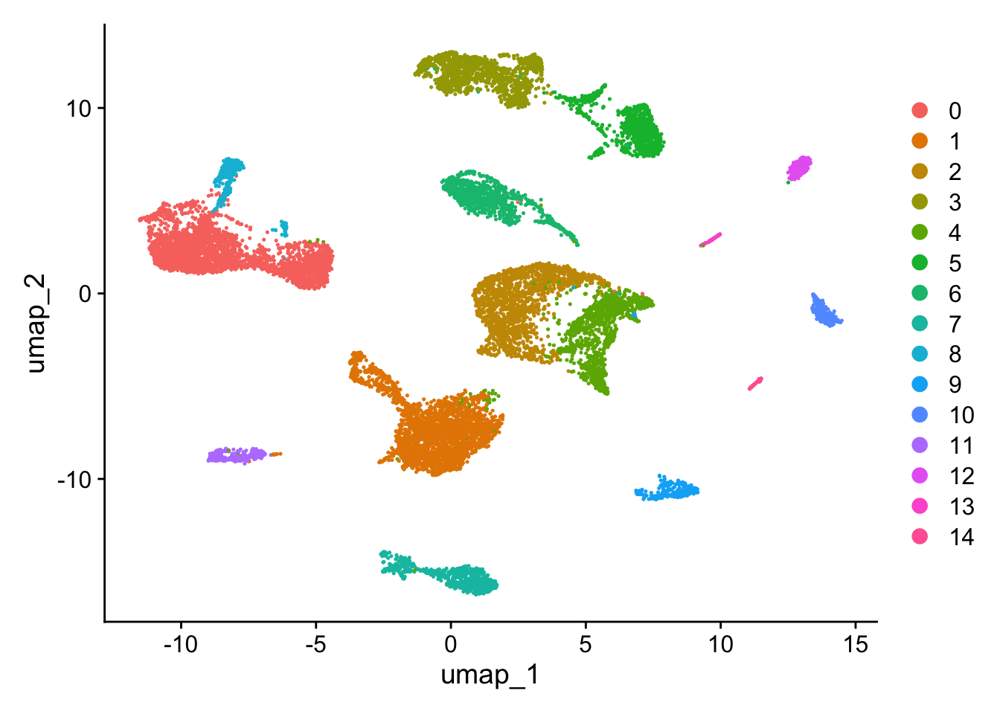
DimPlot(seurat.norm.pdac.multi, reduction = "umap", split.by = "condition")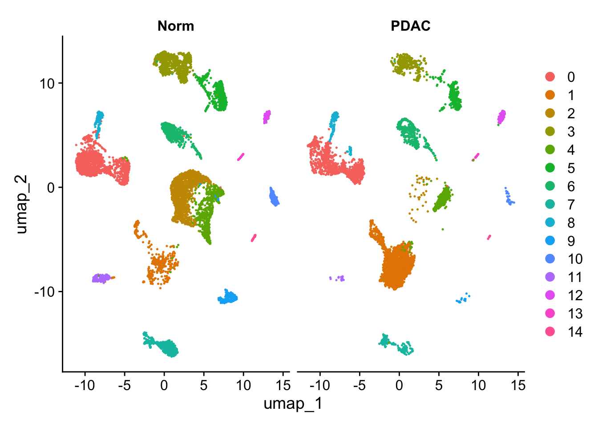
DimPlot(seurat.norm.pdac.multi, reduction = "umap", split.by = "orig.ident")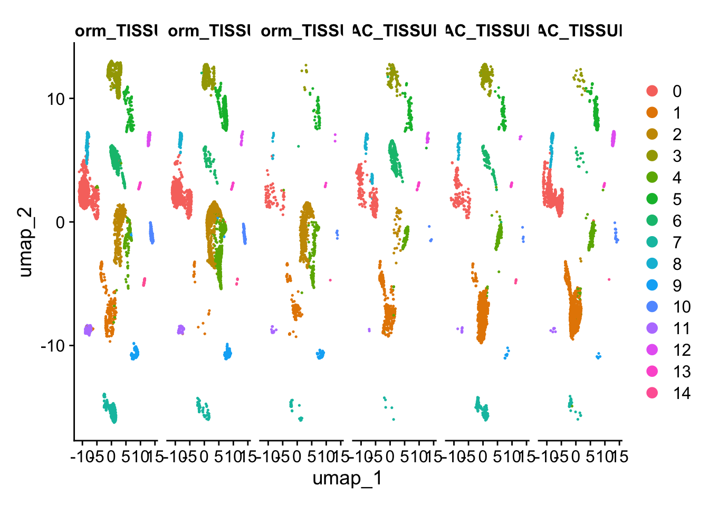
DimPlot(seurat.norm.pdac.multi, reduction = "umap", group.by = "condition", split.by = "orig.ident")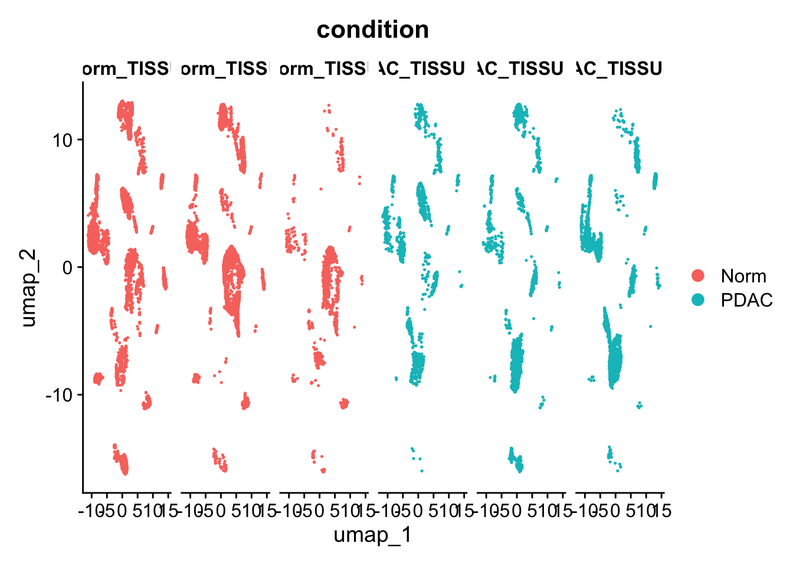
Je sauve l’objet UMAP pour pouvoir le réutiliser plus tard.
saveRDS(object = seurat.norm.pdac.multi, file = "seurat.norm.pdac.multi.rds")
#seurat.norm.pdac.multi <- readRDS(file = "seurat.norm.pdac.multi.rds")1.5 Analyse différentielle PDAC vs Normal
- Faire un
JoinLayerspour obtenir une matrice de comptage unique pour l’ensemble des échantillons - Identifier les gènes différentiellement exprimés
entre les échantillons PDAC et Normal de la même manière que
précédemment. Par défaut,
Findmarkersest très lent. Comment procéder pour l’accélérer ?
1.5.1 Solution:
- Faire une représentation
EnhancedVolcanodes gènes différentiellement exprimés - Faire une Heatmap des 20 gènes les plus différentiellement exprimés
en utilisant les p-valeurs ajustées (utiliser
dplyr::arrange(p_val_adj)
1.5.2 Solution
1.6 Detection automatisée des types cellulaires - Méthode “SingleR”
Nous allons utiliser le package SingleR.
Charger les librairies suivantes:
library(SingleCellExperiment)## Loading required package: SummarizedExperiment## Loading required package: MatrixGenerics## Loading required package: matrixStats##
## Attaching package: 'MatrixGenerics'## The following objects are masked from 'package:matrixStats':
##
## colAlls, colAnyNAs, colAnys, colAvgsPerRowSet, colCollapse,
## colCounts, colCummaxs, colCummins, colCumprods, colCumsums,
## colDiffs, colIQRDiffs, colIQRs, colLogSumExps, colMadDiffs,
## colMads, colMaxs, colMeans2, colMedians, colMins, colOrderStats,
## colProds, colQuantiles, colRanges, colRanks, colSdDiffs, colSds,
## colSums2, colTabulates, colVarDiffs, colVars, colWeightedMads,
## colWeightedMeans, colWeightedMedians, colWeightedSds,
## colWeightedVars, rowAlls, rowAnyNAs, rowAnys, rowAvgsPerColSet,
## rowCollapse, rowCounts, rowCummaxs, rowCummins, rowCumprods,
## rowCumsums, rowDiffs, rowIQRDiffs, rowIQRs, rowLogSumExps,
## rowMadDiffs, rowMads, rowMaxs, rowMeans2, rowMedians, rowMins,
## rowOrderStats, rowProds, rowQuantiles, rowRanges, rowRanks,
## rowSdDiffs, rowSds, rowSums2, rowTabulates, rowVarDiffs, rowVars,
## rowWeightedMads, rowWeightedMeans, rowWeightedMedians,
## rowWeightedSds, rowWeightedVars## Loading required package: GenomicRanges## Loading required package: stats4## Loading required package: BiocGenerics## Loading required package: generics##
## Attaching package: 'generics'## The following objects are masked from 'package:base':
##
## as.difftime, as.factor, as.ordered, intersect, is.element, setdiff,
## setequal, union##
## Attaching package: 'BiocGenerics'## The following objects are masked from 'package:stats':
##
## IQR, mad, sd, var, xtabs## The following objects are masked from 'package:base':
##
## anyDuplicated, aperm, append, as.data.frame, basename, cbind,
## colnames, dirname, do.call, duplicated, eval, evalq, Filter, Find,
## get, grep, grepl, is.unsorted, lapply, Map, mapply, match, mget,
## order, paste, pmax, pmax.int, pmin, pmin.int, Position, rank,
## rbind, Reduce, rownames, sapply, saveRDS, table, tapply, unique,
## unsplit, which.max, which.min## Loading required package: S4Vectors##
## Attaching package: 'S4Vectors'## The following object is masked from 'package:utils':
##
## findMatches## The following objects are masked from 'package:base':
##
## expand.grid, I, unname## Loading required package: IRanges##
## Attaching package: 'IRanges'## The following object is masked from 'package:sp':
##
## %over%## Loading required package: GenomeInfoDb## Loading required package: Biobase## Welcome to Bioconductor
##
## Vignettes contain introductory material; view with
## 'browseVignettes()'. To cite Bioconductor, see
## 'citation("Biobase")', and for packages 'citation("pkgname")'.##
## Attaching package: 'Biobase'## The following object is masked from 'package:MatrixGenerics':
##
## rowMedians## The following objects are masked from 'package:matrixStats':
##
## anyMissing, rowMedians##
## Attaching package: 'SummarizedExperiment'## The following object is masked from 'package:Seurat':
##
## Assays## The following object is masked from 'package:SeuratObject':
##
## Assayslibrary(SingleR)
library(celldex) # celldex fournit des jeux de référence annotés de transcriptomes de types cellulaires humains ou murins.##
## Attaching package: 'celldex'## The following objects are masked from 'package:SingleR':
##
## BlueprintEncodeData, DatabaseImmuneCellExpressionData,
## HumanPrimaryCellAtlasData, ImmGenData, MonacoImmuneData,
## MouseRNAseqData, NovershternHematopoieticDataSingleR attend des données log-normalisées au format
SinGleCellExperiment. On transforme notre objet
Seurat en objet SinGleCellExperiment
grace à la fonction as.SingleCellExperiment.
Vu qu’il y a des warnings, on vérifie bien que l’objet
scecontient bien des données.
sce <- as.SingleCellExperiment(seurat.norm.pdac.multi, assay = "RNA")## Found more than one class "package_version" in cache; using the first, from namespace 'SeuratObject'## Also defined by 'alabaster.base'## Found more than one class "package_version" in cache; using the first, from namespace 'SeuratObject'## Also defined by 'alabaster.base'## Found more than one class "package_version" in cache; using the first, from namespace 'SeuratObject'## Also defined by 'alabaster.base'## Found more than one class "package_version" in cache; using the first, from namespace 'SeuratObject'## Also defined by 'alabaster.base'## Found more than one class "package_version" in cache; using the first, from namespace 'SeuratObject'## Also defined by 'alabaster.base'## Found more than one class "package_version" in cache; using the first, from namespace 'SeuratObject'## Also defined by 'alabaster.base'assayNames(sce)## [1] "counts" "logcounts"colnames(colData(sce))## [1] "orig.ident" "nCount_RNA" "nFeature_RNA" "condition"
## [5] "RNA_snn_res.0.1" "seurat_clusters" "ident"Chargement d’un Atlas de référence:
Le package celldex fournit plusieurs références annotées
:
- HumanPrimaryCellAtlasData() : référence humaine générale (souvent la plus utilisée)
- BlueprintEncodeData() : sang + lignées épithéliales humaines
- HumanMonacoImmuneData() : uniquement immunitaire
- MouseRNAseqData() : pour souris
ref <- celldex::HumanPrimaryCellAtlasData()- Ecrire l’appel de fonction
SingleRpour annoter des cellules. Par défaut,SingleRest lent, comment accélérer ? - Afficher les résultats de l’objet obtenu avec
table.
1.6.1 Solution
1.7 Intégration des
résultats dans l’objet Seurat dans une colonne
SingleR.labels.
- Ajouter les résultats aux méta données de l’objet Seurat
- Vérifier que la matrice
metadataest bien à jour.
1.7.1 Solution
Faire une visualisation avec DimPlot.
DimPlot(
seurat.norm.pdac.multi,
group.by = "SingleR.labels",
label = TRUE,
repel = TRUE
) + ggtitle("Annotation automatique (SingleR + HumanPrimaryCellAtlas)")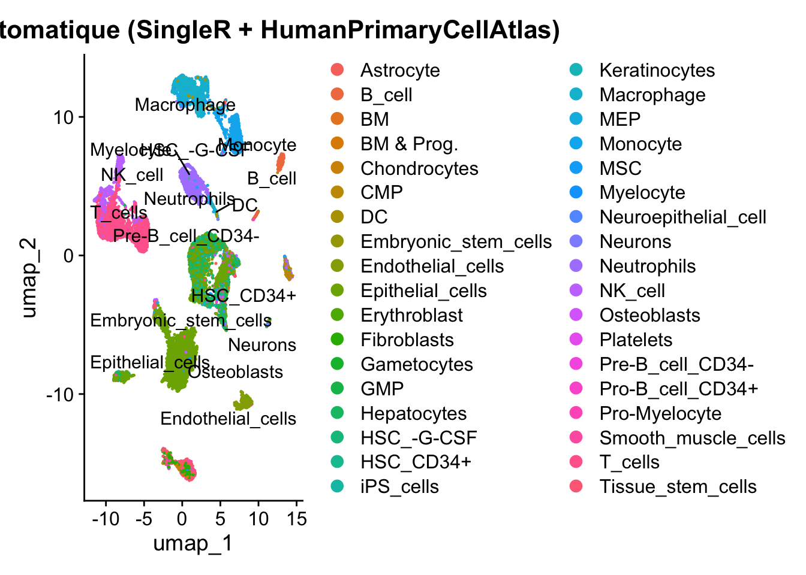
1.8 Annotation par cluster
Par opposition à l’assignation cellule par cellule, on peut aussi assigner un type cellulaire moyen par cluster pour en améliorer l’interprétation.
# Le package scrapper est necessaire:
# Pour l'installer:
#if (!require("BiocManager", quietly = TRUE))
# install.packages("BiocManager")
#BiocManager::install("scrapper")
pred.cluster <- SingleR(
test = sce,
ref = ref,
labels = ref$label.main,
clusters = seurat.norm.pdac.multi$seurat_clusters
)
head(pred.cluster$labels)## [1] "T_cells" "Epithelial_cells" "Epithelial_cells" "Macrophage"
## [5] "Epithelial_cells" "Monocyte"table(pred.cluster$labels)##
## B_cell Endothelial_cells Epithelial_cells Macrophage
## 2 1 4 1
## Monocyte Neurons Neutrophils NK_cell
## 1 1 1 2
## T_cells Tissue_stem_cells
## 1 1# On s'assure que les identifiants sont bien les clusters
Idents(seurat.norm.pdac.multi) <- "seurat_clusters"
# Aligner les labels
clusters <- sort(unique(seurat.norm.pdac.multi$seurat_clusters))
cluster.labels <- pred.cluster$labels
# Nommer le vecteur avec les identités existantes
names(cluster.labels) <- clusters
seurat.norm.pdac.multi <- RenameIdents(seurat.norm.pdac.multi, cluster.labels)
# Visualisation
DimPlot(seurat.norm.pdac.multi, label = TRUE, repel = TRUE) + ggtitle("Annotation par cluster (SingleR)")
# Créer la table de correspondance
cluster_table <- data.frame(
Cluster = clusters,
CellType_SingleR = cluster.labels
)
# Afficher la table
as.matrix(cluster_table)## Cluster CellType_SingleR
## 0 "0" "T_cells"
## 1 "1" "Epithelial_cells"
## 2 "2" "Epithelial_cells"
## 3 "3" "Macrophage"
## 4 "4" "Epithelial_cells"
## 5 "5" "Monocyte"
## 6 "6" "Neutrophils"
## 7 "7" "Tissue_stem_cells"
## 8 "8" "NK_cell"
## 9 "9" "Endothelial_cells"
## 10 "10" "NK_cell"
## 11 "11" "Epithelial_cells"
## 12 "12" "B_cell"
## 13 "13" "B_cell"
## 14 "14" "Neurons"1.9 Sélection des cellules à analyser par sélection visuelle sur UMAP
Il existe une fonciton Cellselector dans Seurat pour sélectionner un cluster à analyser plus finement et faire une analyse hiérarchique.
- Faire un FeaturePlot avec les gènes CD14 et HLA-DRA.
- Utiliser
CellSelectorpour selectionner les macrophages, caractérisés par une forte expression de CD14 et HLA-DRA. - Stocker les macrophages dans un objet Seurat et refaire un pipeline Seurat.
1.9.1 Solution
1.10 Refaire une analyse complète sur les macrophages pour découvrir des sous-populations
On applique le pipeline complet habituel.
seurat.norm.pdac.multi.macrophages <- NormalizeData(seurat.norm.pdac.multi.macrophages, normalization.method = "LogNormalize", scale.factor = 10000) ## Normalizing layer: countsseurat.norm.pdac.multi.macrophages <- FindVariableFeatures(seurat.norm.pdac.multi.macrophages, selection.method = "vst", nfeatures = 2000)## Finding variable features for layer countsseurat.norm.pdac.multi.macrophages <- ScaleData(seurat.norm.pdac.multi.macrophages) ## Centering and scaling data matrixseurat.norm.pdac.multi.macrophages <- RunPCA(seurat.norm.pdac.multi.macrophages, features = VariableFeatures(object = seurat.norm.pdac.multi.macrophages))## PC_ 1
## Positive: RGS1, C1QB, USP53, F13A1, C1QC, C1QA, FGL2, SEPP1, FOLR2, EPB41L2
## HERPUD1, RGS2, A2M, SLC40A1, PDE4B, FILIP1L, IGSF21, STAB1, HLA-DQA2, GPR183
## CPM, ADORA3, GSN, LTC4S, EMP2, GPR155, CST3, NR4A2, IL2RA, AXL
## Negative: CSTB, PLIN2, VCAN, ERO1L, CD52, MARCO, HK2, NDRG1, AQP9, C15orf48
## SLC2A1, ANGPTL4, RP11-290F20.3, C19orf59, SEMA3C, TIMP1, ZNF395, MGST1, CTSD, EGLN3
## ADM, SPP1, EAF1, FTL, CTSL, CXXC5, S100A6, SLAMF9, PPAP2B, ANPEP
## PC_ 2
## Positive: RP5-839B4.8, MRC1L1, SCPEP1, PTPMT1, ACP5, AQP3, RP11-1008C21.1, BIRC7, IL17RB, RP11-283G6.4
## CHDH, B3GNT7, COLEC12, LPL, FBP1, MDH1, CTSZ, ADTRP, TRPV2, CCL18
## PPIC, LIPA, ZBTB7C, GSTT1, ANXA11, PNPLA6, ANXA2, CYP27A1, SPN, ACE
## Negative: PRSS1, CLPS, PNLIP, CPA1, CTRB1, CPB1, PLA2G1B, CELA3B, CTRC, CELA2A
## CELA3A, AMY2A, CTRB2, CEL, GP2, SYCN, REG1A, CPA2, PRSS3, DDIT4
## SERPINB9, LTC4S, SPINK1, SLC25A37, PKIB, CELA2B, PLD4, C3, USP53, CLEC9A
## PC_ 3
## Positive: SLC2A3, IL1B, DDIT4, VCAN, SLC25A37, TNFAIP3, HBEGF, HSPA1A, ADM, ATF3
## ANGPTL4, CLEC5A, HSPA1B, PHLDA1, NR4A1, ALOX5AP, NLRP3, DNAJB1, NR4A2, DUSP2
## HIF1A-AS2, TNF, PLIN2, MTRNR2L1, THBD, NDRG1, CCL20, LINC00910, IL8, HK2
## Negative: FTL, APOC1, CHIT1, APOE, LIPA, NUPR1, ACP5, PRDX1, CTSD, LGALS3
## PLA2G7, ALDH1A1, C1QB, HLA-DRB5, CD59, EPHX1, RBP4, CCL18, CTSZ, IFI27
## C1QA, BIRC7, CYP27A1, HS3ST2, OTOA, DNAJC5B, CES1, GPNMB, TREM2, FOLR2
## PC_ 4
## Positive: FBP1, AQP3, RP11-283G6.4, RPS4Y1, PRSS1, CLPS, CD69, RGCC, CLEC12A, RP5-839B4.8
## ALOX5AP, HCST, PNLIP, IL17RB, S100A4, LPL, EGR2, FCGBP, CPE, C19orf59
## CCL3L1, HBEGF, RAC2, CCND3, CPB1, COL22A1, SLC19A3, CPA1, INHBA, AMICA1
## Negative: RNASE1, ARL4C, PLD3, ABCA1, SLC40A1, CTSB, LGMN, SDC3, GAL3ST4, GPNMB
## OLFML2B, SEPP1, CTSD, MMP14, PLTP, CTSL, SCD, STAB1, NPL, ZFAND5
## ME1, GPX3, ADAM8, GM2A, SLC7A8, IL2RA, ERRFI1, FOLR2, TDP2, IDH1
## PC_ 5
## Positive: PRSS1, APOE, VSIG4, CLPS, PNLIP, CTRB1, CPA1, PLA2G1B, APOC1, RMDN3
## MS4A4A, PCOLCE2, LINC00910, GCHFR, CPB1, MARCO, CELA3B, FABP4, CTRC, TGM2
## CELA3A, CELA2A, REG1A, CCL2, AMY2A, CTRB2, AGRP, FOLR3, C1QC, CEL
## Negative: LCN2, TFF1, CLDN4, PPDPF, IL3RA, CST7, XIST, SLAMF9, CLDN18, TACSTD2
## KRT7, C19orf33, CAMK2N1, KRT19, FXYD3, EPCAM, GPRC5A, PERP, TFF2, SLC7A11
## C15orf48, SMIM22, KRT18, CD109, MAL2, TM4SF1, SLPI, HSPB1, CTSE, S100A6DimPlot(seurat.norm.pdac.multi.macrophages, reduction = "pca")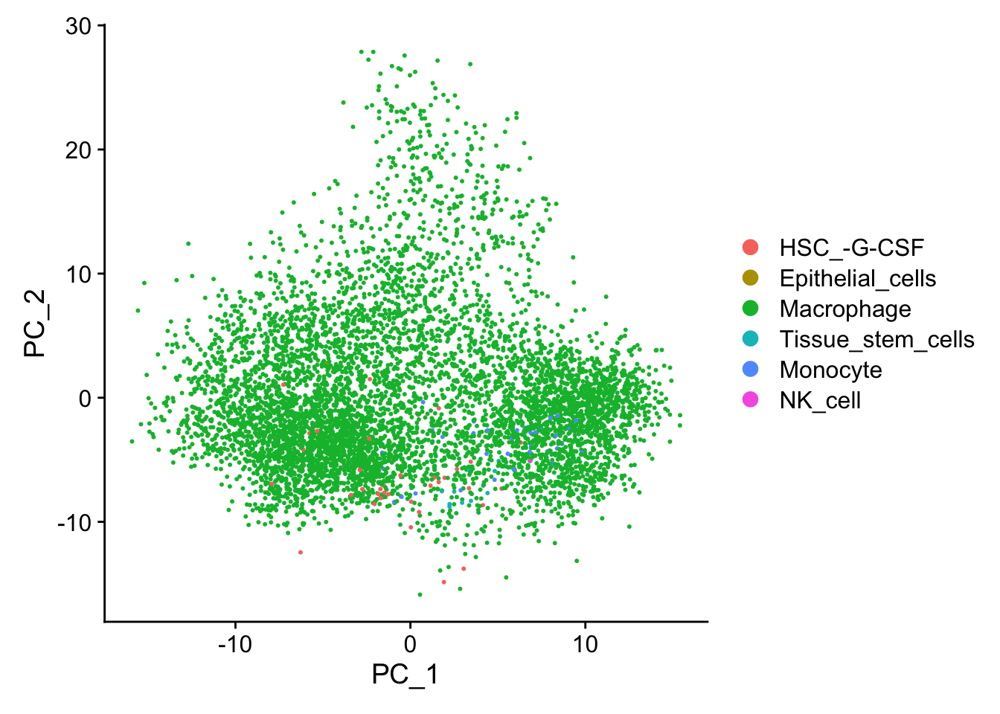
ElbowPlot(seurat.norm.pdac.multi.macrophages, reduction = "pca")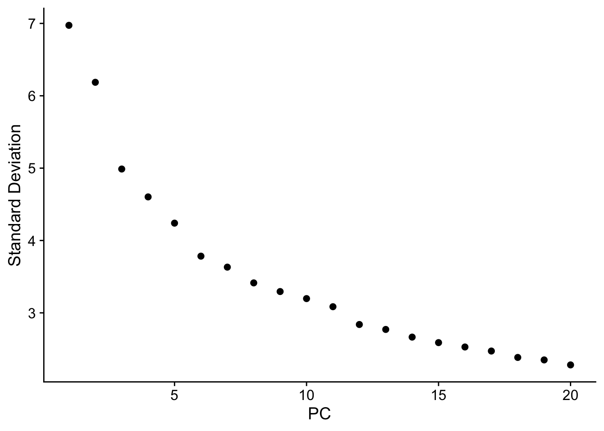
seurat.norm.pdac.multi.macrophages <- FindNeighbors(seurat.norm.pdac.multi.macrophages, reduction = "pca", dims = 1:10)## Computing nearest neighbor graph## Computing SNNseurat.norm.pdac.multi.macrophages <- FindClusters(seurat.norm.pdac.multi.macrophages, resolution = 0.05)## Modularity Optimizer version 1.3.0 by Ludo Waltman and Nees Jan van Eck
##
## Number of nodes: 6520
## Number of edges: 208923
##
## Running Louvain algorithm...
## Maximum modularity in 10 random starts: 0.9671
## Number of communities: 5
## Elapsed time: 0 secondsseurat.norm.pdac.multi.macrophages <- RunUMAP(seurat.norm.pdac.multi.macrophages, reduction = "pca", dims = 1:10)## 14:10:08 UMAP embedding parameters a = 0.9922 b = 1.112## 14:10:08 Read 6520 rows and found 10 numeric columns## 14:10:08 Using Annoy for neighbor search, n_neighbors = 30## 14:10:08 Building Annoy index with metric = cosine, n_trees = 50## 0% 10 20 30 40 50 60 70 80 90 100%## [----|----|----|----|----|----|----|----|----|----|## **************************************************|
## 14:10:08 Writing NN index file to temp file /var/folders/91/6skgr68s5ls_dhqfdzs02_pm00013r/T//RtmpejztsC/file4bf8372f069c
## 14:10:08 Searching Annoy index using 1 thread, search_k = 3000
## 14:10:09 Annoy recall = 100%
## 14:10:10 Commencing smooth kNN distance calibration using 1 thread with target n_neighbors = 30
## 14:10:11 Initializing from normalized Laplacian + noise (using RSpectra)
## 14:10:11 Commencing optimization for 500 epochs, with 263094 positive edges
## 14:10:11 Using rng type: pcg
## 14:10:17 Optimization finishedDimPlot(seurat.norm.pdac.multi.macrophages, reduction = "umap")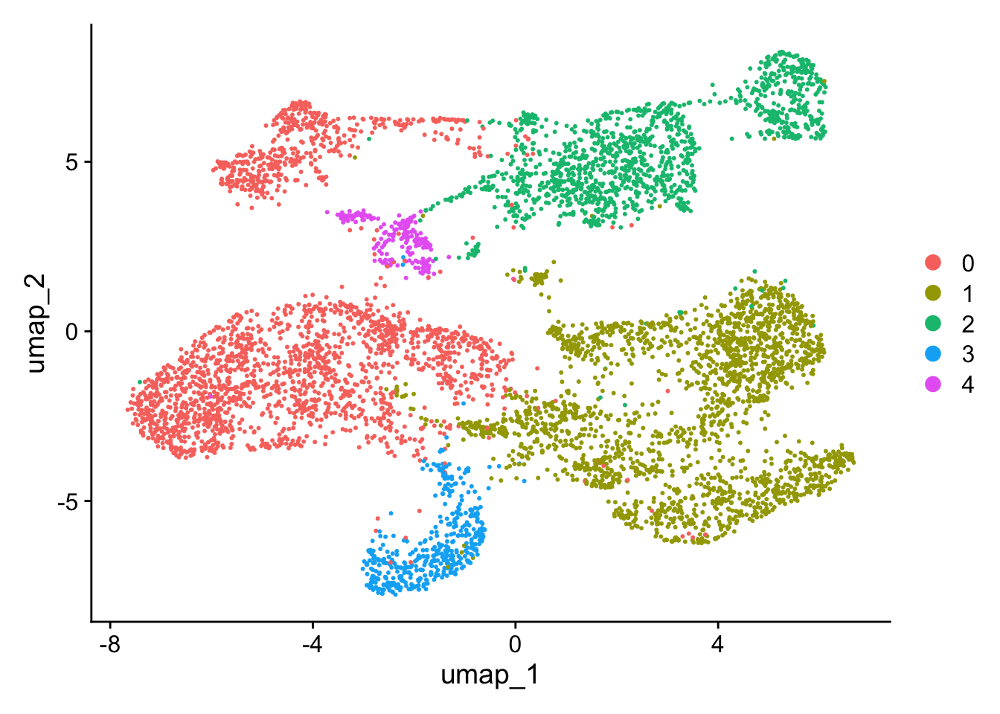
DimPlot(seurat.norm.pdac.multi.macrophages, reduction = "umap", split.by = "condition")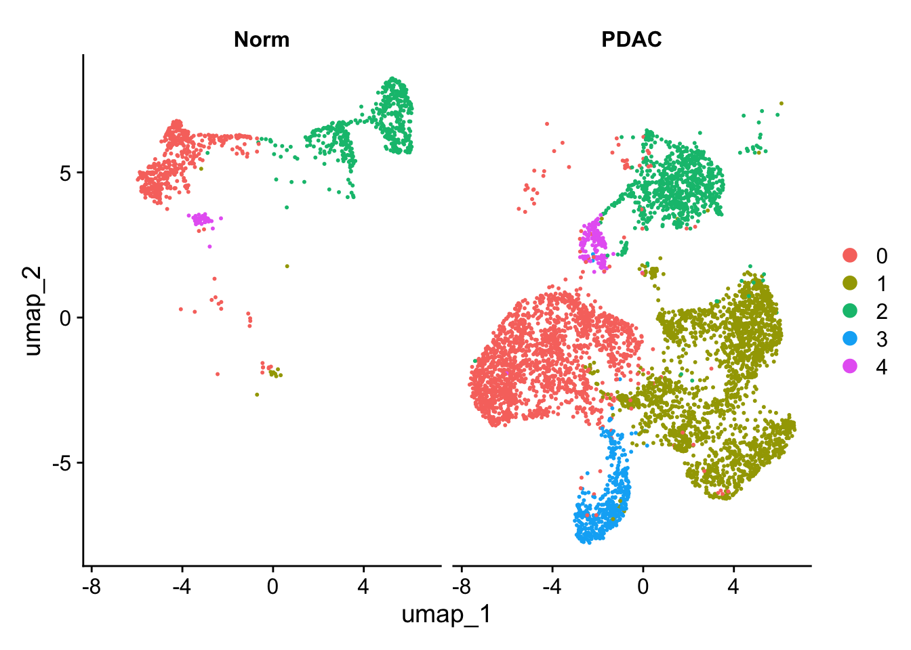
DimPlot(seurat.norm.pdac.multi.macrophages, reduction = "umap", split.by = "orig.ident")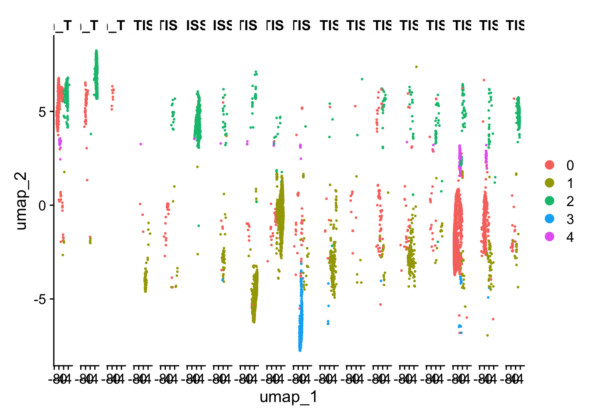
1.11 DE entre macrophages des sains et macrophages infiltrant les tumeurs
Nous allons comparer l’expression des macrophages dans les tissus sains et ceux identifiés dans les PDAC.
- Identifier les gènes différentiellement exprimés.
- Représenter les gènes différentiellement exprimés sous forme de volcano plot.
- Représenter les gènes différentiellement exprimes sous forme de heatmap.
- Identifier les pathways GO surexprimés dans les
PDAC avec
ClusterProfiler.
1.11.1 1. Solution:
1.11.2 2. Solution
1.11.3 3. Solution
DoHeatmap(
object = seurat.norm.pdac.multi.macrophages,
features = top50,
group.by = "condition",
label = TRUE,
size = 3
)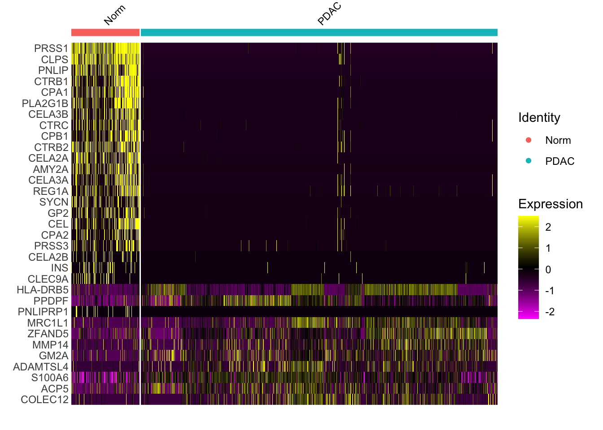
1.11.4 Solution 4.
library(clusterProfiler)## ## clusterProfiler v4.16.0 Learn more at https://yulab-smu.top/contribution-knowledge-mining/
##
## Please cite:
##
## Guangchuang Yu, Li-Gen Wang, Yanyan Han and Qing-Yu He.
## clusterProfiler: an R package for comparing biological themes among
## gene clusters. OMICS: A Journal of Integrative Biology. 2012,
## 16(5):284-287##
## Attaching package: 'clusterProfiler'## The following object is masked from 'package:IRanges':
##
## slice## The following object is masked from 'package:S4Vectors':
##
## rename## The following object is masked from 'package:stats':
##
## filterlibrary(org.Hs.eg.db)## Loading required package: AnnotationDbi##
## Attaching package: 'AnnotationDbi'## The following object is masked from 'package:clusterProfiler':
##
## select## library(dplyr)##
## Attaching package: 'dplyr'## The following object is masked from 'package:AnnotationDbi':
##
## select## The following object is masked from 'package:Biobase':
##
## combine## The following objects are masked from 'package:GenomicRanges':
##
## intersect, setdiff, union## The following object is masked from 'package:GenomeInfoDb':
##
## intersect## The following objects are masked from 'package:IRanges':
##
## collapse, desc, intersect, setdiff, slice, union## The following objects are masked from 'package:S4Vectors':
##
## first, intersect, rename, setdiff, setequal, union## The following objects are masked from 'package:BiocGenerics':
##
## combine, intersect, setdiff, setequal, union## The following object is masked from 'package:generics':
##
## explain## The following object is masked from 'package:matrixStats':
##
## count## The following objects are masked from 'package:stats':
##
## filter, lag## The following objects are masked from 'package:base':
##
## intersect, setdiff, setequal, union# 1) Sélectionner les gènes up dans PDAC (log2FC > 0, p.adj < 0.05)
up_genes_pdac <- de_pdac_vs_norm %>%
filter(avg_log2FC > 0 & p_val_adj < 0.05) %>%
pull(gene) %>%
unique()
# 2) Convertir SYMBOL → ENTREZID pour clusterProfiler
gene_map <- bitr(up_genes_pdac, fromType = "SYMBOL", toType = "ENTREZID", OrgDb = org.Hs.eg.db)## 'select()' returned 1:many mapping between keys and columnsentrez_up <- unique(gene_map$ENTREZID)
# 3) Enrichissement GO (Biological Process)
ego <- enrichGO(
gene = entrez_up,
OrgDb = org.Hs.eg.db,
keyType = "ENTREZID",
ont = "BP", # Biological Process
pAdjustMethod = "BH",
qvalueCutoff = 0.05,
readable = TRUE # convertit ENTIREZID -> SYMBOL
)
# 4) Résultats et visualisation
library(knitr)
kable(as.data.frame(ego[1:10,1:5])) # top 10 GO terms| ID | Description | GeneRatio | BgRatio | RichFactor | |
|---|---|---|---|---|---|
| GO:0016236 | GO:0016236 | macroautophagy | 204/4794 | 374/18805 | 0.5454545 |
| GO:0048193 | GO:0048193 | Golgi vesicle transport | 172/4794 | 306/18805 | 0.5620915 |
| GO:0007033 | GO:0007033 | vacuole organization | 138/4794 | 238/18805 | 0.5798319 |
| GO:0007034 | GO:0007034 | vacuolar transport | 107/4794 | 172/18805 | 0.6220930 |
| GO:0016197 | GO:0016197 | endosomal transport | 155/4794 | 293/18805 | 0.5290102 |
| GO:0043161 | GO:0043161 | proteasome-mediated ubiquitin-dependent protein catabolic process | 215/4794 | 467/18805 | 0.4603854 |
| GO:0010506 | GO:0010506 | regulation of autophagy | 175/4794 | 359/18805 | 0.4874652 |
| GO:0045088 | GO:0045088 | regulation of innate immune response | 214/4794 | 482/18805 | 0.4439834 |
| GO:0007040 | GO:0007040 | lysosome organization | 73/4794 | 111/18805 | 0.6576577 |
| GO:0080171 | GO:0080171 | lytic vacuole organization | 73/4794 | 111/18805 | 0.6576577 |
# Barplot
barplot(ego, showCategory = 20, title = "GO BP – Up in PDAC (Macrophages)")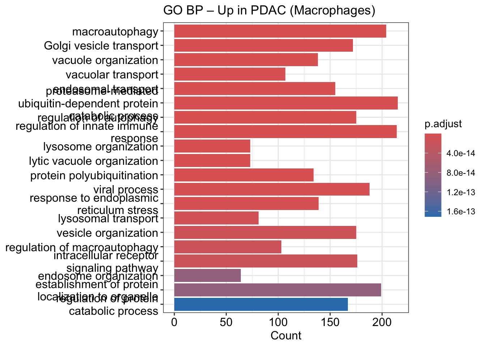
# Dotplot (alternative)
dotplot(ego, showCategory = 20, title = "GO BP – Up in PDAC (Macrophages)")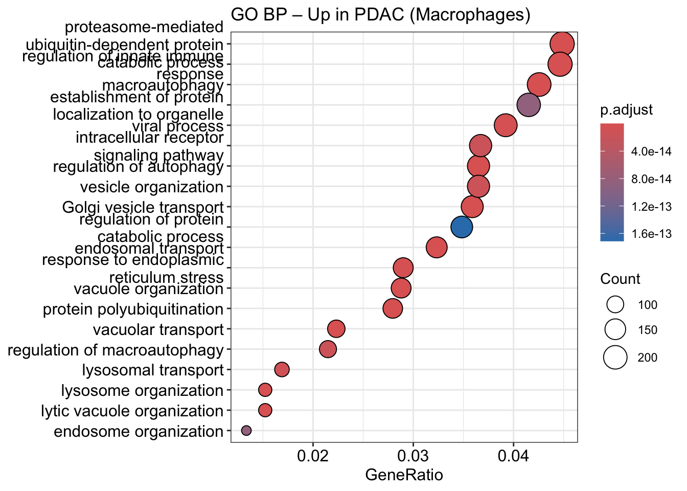
2 Bonus: Analyse Avancée
2.1 Cycle cellulaire
Corriger (ou “compenser”) l’effet du cycle cellulaire peut être une étape clé dans l’analyse single-cell RNA-seq, car le cycle peut introduire une variation biologique non pertinente qui masque les vraies différences de types cellulaires.
D’abord on peut charger les gènes du cycle. Elles sont déjà intégrées dans Seurat:
# Listes intégrées de gènes du cycle cellulaire
s.genes <- cc.genes$s.genes
g2m.genes <- cc.genes$g2m.genesNote: Si on est dans le cas d’une analyse de données murines, on peux convertir ces listes de gènes avec toupper() ou MouseToHumanOrthologs().
On calcule un score de cycle pour chaque cellule et on visualise
cette information avec Dimplot.
Cela ajoute trois colonnes à seurat.norm.pdac.multi@meta.data : - S.Score : score de phase S - G2M.Score : score de phase G2/M - Phase : phase dominante de la cellule (G1, S ou G2M)
On fait un FeaturePlotavec les marqueurs de cycle
“MKI67”, “TOP2A” et “PCNA”.
Question: Que peut-on conclure de ces dernières figures ?
seurat.norm.pdac.multi <- CellCycleScoring(
seurat.norm.pdac.multi,
s.features = s.genes,
g2m.features = g2m.genes,
set.ident = TRUE
)
table(seurat.norm.pdac.multi$Phase)##
## G1 G2M S
## 7969 1939 4272DimPlot(seurat.norm.pdac.multi, group.by = "Phase")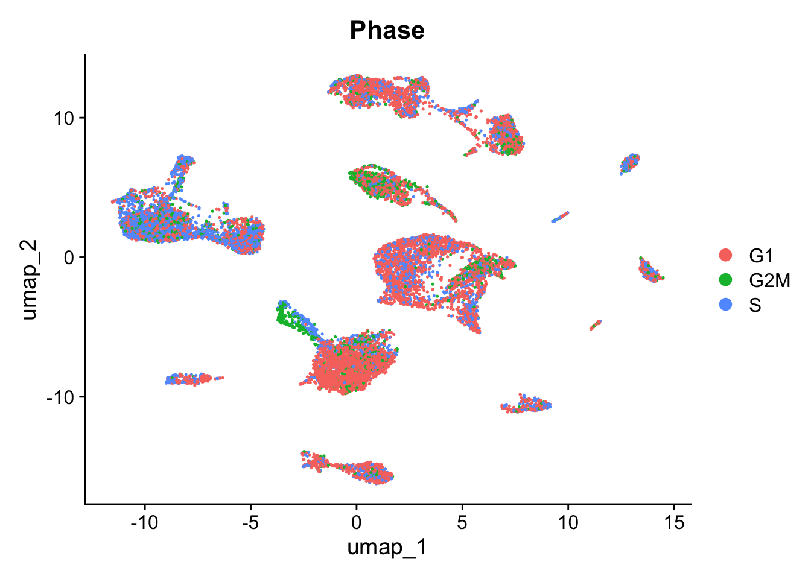
FeaturePlot(
seurat.norm.pdac.multi,
features = c("MKI67", "TOP2A", "PCNA"), # marqueurs du cycle
cols = c("lightgrey", "red")
)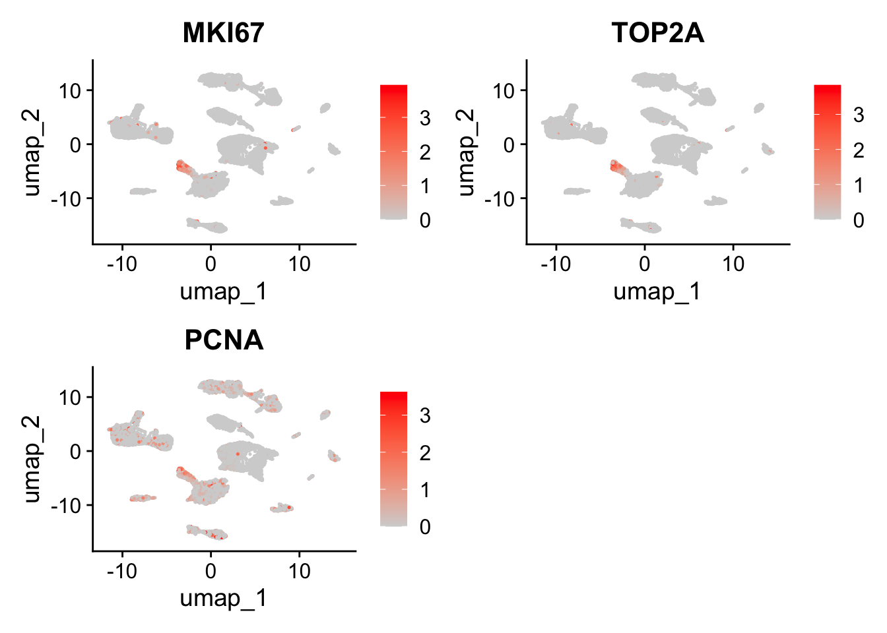
Question:
- Appliquer le pipeline standard en régressant pour le cycle
cellulaire en donnant les bonnes options à
ScaleData. - Appliquer le pipeline standard en régressant pour le cycle
cellulaire en donnant les bonnes options à
ScaleDataen appliquant la technique de compensation sur la différenceS.Score-G2M.Score.
2.1.1 Solution
Compensation standard avec S.Score et G2M.Score
Compensation avec la différence S.Score-G2M.Score
3 Session Info
sessionInfo()## R version 4.5.1 (2025-06-13)
## Platform: aarch64-apple-darwin20
## Running under: macOS Sequoia 15.7.1
##
## Matrix products: default
## BLAS: /Library/Frameworks/R.framework/Versions/4.5-arm64/Resources/lib/libRblas.0.dylib
## LAPACK: /Library/Frameworks/R.framework/Versions/4.5-arm64/Resources/lib/libRlapack.dylib; LAPACK version 3.12.1
##
## locale:
## [1] en_US.UTF-8/en_US.UTF-8/en_US.UTF-8/C/en_US.UTF-8/en_US.UTF-8
##
## time zone: Europe/Paris
## tzcode source: internal
##
## attached base packages:
## [1] stats4 stats graphics grDevices datasets utils methods
## [8] base
##
## other attached packages:
## [1] knitr_1.50 dplyr_1.1.4
## [3] org.Hs.eg.db_3.21.0 AnnotationDbi_1.70.0
## [5] clusterProfiler_4.16.0 celldex_1.18.0
## [7] SingleR_2.10.0 SingleCellExperiment_1.30.1
## [9] SummarizedExperiment_1.38.1 Biobase_2.68.0
## [11] GenomicRanges_1.60.0 GenomeInfoDb_1.44.3
## [13] IRanges_2.42.0 S4Vectors_0.46.0
## [15] BiocGenerics_0.54.1 generics_0.1.4
## [17] MatrixGenerics_1.20.0 matrixStats_1.5.0
## [19] EnhancedVolcano_1.26.0 ggrepel_0.9.6
## [21] ggplot2_4.0.0 future_1.67.0
## [23] harmony_1.2.4 Rcpp_1.1.0
## [25] Seurat_5.3.1 SeuratObject_5.2.0
## [27] sp_2.2-0
##
## loaded via a namespace (and not attached):
## [1] fs_1.6.6 spatstat.sparse_3.1-0
## [3] enrichplot_1.28.4 httr_1.4.7
## [5] RColorBrewer_1.1-3 tools_4.5.1
## [7] sctransform_0.4.2 alabaster.base_1.8.1
## [9] R6_2.6.1 HDF5Array_1.36.0
## [11] lazyeval_0.2.2 uwot_0.2.3
## [13] rhdf5filters_1.20.0 withr_3.0.2
## [15] gridExtra_2.3 progressr_0.17.0
## [17] cli_3.6.5 spatstat.explore_3.5-3
## [19] fastDummies_1.7.5 alabaster.se_1.8.0
## [21] labeling_0.4.3 sass_0.4.10
## [23] S7_0.2.0 spatstat.data_3.1-9
## [25] ggridges_0.5.7 pbapply_1.7-4
## [27] yulab.utils_0.2.1 gson_0.1.0
## [29] DOSE_4.2.0 R.utils_2.13.0
## [31] parallelly_1.45.1 limma_3.64.3
## [33] rstudioapi_0.17.1 RSQLite_2.4.3
## [35] gridGraphics_0.5-1 ica_1.0-3
## [37] spatstat.random_3.4-2 GO.db_3.21.0
## [39] Matrix_1.7-4 scrapper_1.2.1
## [41] abind_1.4-8 R.methodsS3_1.8.2
## [43] lifecycle_1.0.4 yaml_2.3.10
## [45] qvalue_2.40.0 rhdf5_2.52.1
## [47] SparseArray_1.8.1 BiocFileCache_2.16.2
## [49] Rtsne_0.17 grid_4.5.1
## [51] blob_1.2.4 promises_1.5.0
## [53] ExperimentHub_2.16.1 crayon_1.5.3
## [55] ggtangle_0.0.7 miniUI_0.1.2
## [57] lattice_0.22-7 beachmat_2.24.0
## [59] cowplot_1.2.0 KEGGREST_1.48.1
## [61] pillar_1.11.1 fgsea_1.34.2
## [63] future.apply_1.20.0 codetools_0.2-20
## [65] fastmatch_1.1-6 glue_1.8.0
## [67] ggfun_0.2.0 spatstat.univar_3.1-4
## [69] data.table_1.17.8 treeio_1.32.0
## [71] vctrs_0.6.5 png_0.1-8
## [73] gypsum_1.4.0 spam_2.11-1
## [75] gtable_0.3.6 cachem_1.1.0
## [77] xfun_0.54 S4Arrays_1.8.1
## [79] mime_0.13 survival_3.8-3
## [81] statmod_1.5.1 fitdistrplus_1.2-4
## [83] ROCR_1.0-11 nlme_3.1-168
## [85] ggtree_3.16.3 bit64_4.6.0-1
## [87] alabaster.ranges_1.8.0 filelock_1.0.3
## [89] RcppAnnoy_0.0.22 bslib_0.9.0
## [91] irlba_2.3.5.1 KernSmooth_2.23-26
## [93] otel_0.2.0 DBI_1.2.3
## [95] tidyselect_1.2.1 bit_4.6.0
## [97] compiler_4.5.1 curl_7.0.0
## [99] httr2_1.2.1 BiocNeighbors_2.2.0
## [101] h5mread_1.0.1 DelayedArray_0.34.1
## [103] plotly_4.11.0 scales_1.4.0
## [105] lmtest_0.9-40 rappdirs_0.3.3
## [107] stringr_1.5.2 digest_0.6.37
## [109] goftest_1.2-3 spatstat.utils_3.2-0
## [111] alabaster.matrix_1.8.0 rmarkdown_2.30
## [113] XVector_0.48.0 RhpcBLASctl_0.23-42
## [115] htmltools_0.5.8.1 pkgconfig_2.0.3
## [117] sparseMatrixStats_1.20.0 dbplyr_2.5.1
## [119] fastmap_1.2.0 rlang_1.1.6
## [121] htmlwidgets_1.6.4 UCSC.utils_1.4.0
## [123] shiny_1.11.1 DelayedMatrixStats_1.30.0
## [125] farver_2.1.2 jquerylib_0.1.4
## [127] zoo_1.8-14 jsonlite_2.0.0
## [129] BiocParallel_1.42.2 GOSemSim_2.34.0
## [131] R.oo_1.27.1 magrittr_2.0.4
## [133] ggplotify_0.1.3 GenomeInfoDbData_1.2.14
## [135] dotCall64_1.2 patchwork_1.3.2
## [137] Rhdf5lib_1.30.0 ape_5.8-1
## [139] reticulate_1.44.0 stringi_1.8.7
## [141] alabaster.schemas_1.8.0 MASS_7.3-65
## [143] AnnotationHub_3.16.1 plyr_1.8.9
## [145] parallel_4.5.1 listenv_0.10.0
## [147] deldir_2.0-4 Biostrings_2.76.0
## [149] splines_4.5.1 tensor_1.5.1
## [151] igraph_2.2.1 spatstat.geom_3.6-0
## [153] RcppHNSW_0.6.0 reshape2_1.4.4
## [155] BiocVersion_3.21.1 evaluate_1.0.5
## [157] renv_1.1.5 BiocManager_1.30.26
## [159] httpuv_1.6.16 RANN_2.6.2
## [161] tidyr_1.3.1 purrr_1.1.0
## [163] polyclip_1.10-7 scattermore_1.2
## [165] xtable_1.8-4 tidytree_0.4.6
## [167] RSpectra_0.16-2 later_1.4.4
## [169] viridisLite_0.4.2 tibble_3.3.0
## [171] aplot_0.2.9 memoise_2.0.1
## [173] cluster_2.1.8.1 globals_0.18.0
Cette œuvre est mise à disposition selon les termes de la
Licence
Creative Commons:
Attribution - Pas d’Utilisation Commerciale -
Pas de Modification 4.0 International (CC BY-NC-ND 4.0).